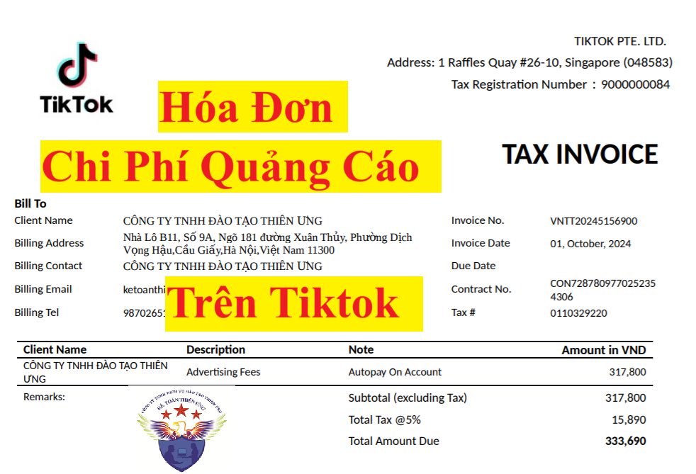

Theo Công văn 3115/TCT-CS ngày 19/07/2024 của Tổng Cục Thuế về chính sách thuế thì chi phí quảng cáo trên Tiktok được tính vào chi phí được trừ khi xác định thu nhập chịu thuế TNDN nhưng không được khấu trừ thuế GTGT đầu vào
Cụ thể như sau:
1. Về nghĩa vụ kê khai, khấu trừ và nộp thuế thay cho nhà cung cấp nước ngoài tại Việt Nam
Trường hợp nhà cung cấp nước ngoài TikTok Pte. Ltd đã thực hiện đăng ký, kê khai và nộp thuế theo quy định tại Điều 76, Điều 77, Điều 78 Thông tư số 80/2021/TT-BTC ngày 29/9/2021 của Bộ Tài chính thì nhà cung cấp nước ngoài thực hiện trực tiếp tại cổng thông tin điện tử của Tổng cục Thuế.
2. Về kê khai và khấu trừ thuế GTGT:
Một trong các điều kiện để được khấu trừ thuế GTGT đầu vào là có hóa đơn GTGT của dịch vụ mua vào hoặc chứng từ nộp thuế GTGT ở khâu nhập khẩu hoặc chứng từ nộp thuế GTGT thay cho phía nước ngoài. Theo hóa đơn được đính kèm theo công văn hỏi của nhà cung cấp nước ngoài TikTok Pte. Ltd thì đây không phải là hóa đơn GTGT dành cho tổ chức khai thuế GTGT theo phương pháp khấu trừ theo quy định pháp luật về hóa đơn, chứng từ, do đó, không đáp ứng điều kiện khấu trừ thuế GTGT đầu vào theo quy định.
3. Về xác định chi phí được trừ khi tính thuế thu nhập doanh nghiệp:
Trường hợp doanh nghiệp tại Việt Nam nhận được hóa đơn, chứng từ từ nhà cung cấp nước ngoài TikTok Pte. Ltd cho các dịch vụ liên quan đến hoạt động kinh doanh của doanh nghiệp mang tên, địa chỉ, mã số thuế của doanh nghiệp và đáp ứng các điều kiện thanh toán theo quy định của pháp luật thì được tính vào chi phí được trừ khi xác định thu nhập chịu thuế TNDN (bao gồm cả khoản tiền đã trả mà nhà cung cấp nước ngoài xác định là thuế GTGT được thể hiện trên hóa đơn, chứng từ của nhà cung cấp nước ngoài xuất cho doanh nghiệp Việt Nam).
Mẫu hóa đơn quảng cáo trên Tiktok:

Chi tiết đầy đủ nội dung của Công văn 3115/TCT-CS ngày 19/07/2024 của Tổng Cục Thuế:
Kính gửi: TikTok Pte. Ltd
Tổng cục Thuế nhận được văn bản ngày 15/4/2024 của nhà cung cấp nước ngoài TikTok Pte. Ltd về chính sách thuế. Về vấn đề này, Tổng cục Thuế có ý kiến như sau:Căn cứ Điều 76, Điều 77, Điều 78, Điều 81 Thông tư số 80/2021/TT-BTC ngày 29/9/2021 của Bộ Tài chính hướng dẫn về đăng ký thuế trực tiếp của nhà cung cấp ở nước ngoài, khai thuế, tính thuế trực tiếp của nhà cung cấp ở nước ngoài, nộp thuế trực tiếp của nhà cung cấp ở nước ngoài và trách nhiệm của các tổ chức, cá nhân ở Việt Nam có liên quan trong trường hợp mua hàng hoá, dịch vụ của nhà cung cấp ở nước ngoài; Căn cứ Điều 4 Thông tư số 96/2015/TT-BTC ngày 22/6/2015 của Bộ Tài chính hướng dẫn về thuế thu nhập doanh nghiệp; Căn cứ khoản 4, khoản 5, khoản 6 Điều 1 Luật sửa đổi, bổ sung một số điều của Luật thuế GTGT số 31/2013/QH13 ngày 19/6/2013 sửa đổi, bổ sung Điều 10 Luật Thuế GTGT số 13/2008/QH12 ngày 03/6/2008 quy định về phương pháp khấu trừ thuế, phương pháp tính trực tiếp trên GTGT và khấu trừ thuế GTGT đầu vào; Căn cứ điểm a khoản 2 Điều 9 Nghị định số 209/2013/NĐ-CP ngày 18/12/2013 của Chính phủ quy định điều kiện khấu trừ thuế GTGT đầu vào; Căn cứ Điều 2 và Điều 8 Nghị định số 123/2020/NĐ-CP ngày 19/10/2020 của Chính phủ quy định về đối tượng áp dụng và loại hóa đơn; Căn cứ khoản 9 Điều 14, Điều 15 Thông tư số 219/2013/TT-BTC ngày 31/12/2013 của Bộ Tài chính hướng dẫn về nguyên tắc khấu trừ thuế giá trị gia tăng đầu vào và điều kiện khấu trừ thuế GTGT đầu vào. Căn cứ các quy định và hướng dẫn nêu trên: 1. Về nghĩa vụ kê khai, khấu trừ và nộp thuế thay cho nhà cung cấp nước ngoài tại Việt Nam Trường hợp nhà cung cấp nước ngoài TikTok Pte. Ltd đã thực hiện đăng ký, kê khai và nộp thuế theo quy định tại Điều 76, Điều 77, Điều 78 Thông tư số 80/2021/TT-BTC ngày 29/9/2021 của Bộ Tài chính thì nhà cung cấp nước ngoài thực hiện trực tiếp tại Cổng thông tin điện tử của Tổng cục Thuế. 2. Về kê khai và khấu trừ thuế GTGT: Một trong các điều kiện để được khấu trừ thuế GTGT đầu vào là có hóa đơn GTGT của dịch vụ mua vào hoặc chứng từ nộp thuế GTGT ở khâu nhập khẩu hoặc chứng từ nộp thuế GTGT thay cho phía nước ngoài. Theo hóa đơn được đính kèm theo công văn hỏi của nhà cung cấp nước ngoài TikTok Pte. Ltd thì đây không phải là hóa đơn GTGT dành cho tổ chức khai thuế GTGT theo phương pháp khấu trừ theo quy định pháp luật về hóa đơn, chứng từ, do đó, không đáp ứng điều kiện khấu trừ thuế GTGT đầu vào theo quy định. 3. Về xác định chi phí được trừ khi tính thuế thu nhập doanh nghiệp: Trường hợp doanh nghiệp tại Việt Nam nhận được hóa đơn, chứng từ từ nhà cung cấp nước ngoài TikTok Pte. Ltd cho các dịch vụ liên quan đến hoạt động kinh doanh của doanh nghiệp mang tên, địa chỉ, mã số thuế của doanh nghiệp và đáp ứng các điều kiện thanh toán tính vào chi phí được trừ khi xác định thu nhập chịu thuế TNDN (bao gồm cả khoản tiền đã trả mà nhà cung cấp nước ngoài xác định là thuế GTGT được thể hiện trên hóa đơn, chứng từ của nhà cung cấp nước ngoài xuất cho doanh nghiệp Việt Nam). Tổng cục Thuế có ý kiến để nhà cung cấp nước ngoài TikTok Pte. Ltd được biết./.
|